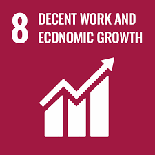

No Poverty
End poverty in all its forms everywhere.
Eradicating poverty is not a task of charity, it’s an act of justice and the key to unlocking an enormous human potential. Still, nearly half of the world’s population lives in poverty, and lack of food and clean water is killing thousands every single day of the year. Together, we can feed the hungry, wipe out disease and give everyone in the world a chance to prosper and live a productive and rich life.
Zero Hunger
End hunger, achieve food security and improved nutrition and promote sustainable agriculture.
Hunger is the leading cause of death in the world. Our planet has provided us with tremendous resources, but unequal access and inefficient handling leaves millions of people malnourished. If we promote sustainable agriculture with modern technologies and fair distribution systems, we can sustain the whole world’s population and make sure that nobody will ever suffer from hunger again.

Good Health and Well-Being
Ensure healthy lives and promote well-being for all at all ages.
Over the last 15 years, the number of childhood deaths has been cut in half. This proves that it is possible to win the fight against almost every disease. Still, we are spending an astonishing amount of money and resources on treating illnesses that are surprisingly easy to prevent. The new goal for worldwide Good Health promotes healthy lifestyles, preventive measures and modern, efficient healthcare for everyone.
Quality Education
Ensure inclusive and equitable quality education and promote lifelong learning opportunities for all.
Education liberates the intellect, unlocks the imagination and is fundamental for self-respect. It is the key to prosperity and opens a world of opportunities, making it possible for each of us to contribute to a progressive, healthy society. Learning benefits every human being and should be available to all.
Gender Equality
Achieve gender equality and empower all women and girls.
Gender bias is undermining our social fabric and devalues all of us. It is not just a human rights issue; it is a tremendous waste of the world’s human potential. By denying women equal rights, we deny half the population a chance to live life at its fullest. Political, economic and social equality for women will benefit all the world’s citizens. Together we can eradicate prejudice and work for equal rights and respect for all.
Clean Water and Sanitation
Ensure availability and sustainable management of water and sanitation for all.
One in three people live without sanitation. This is causing unnecessary disease and death. Although huge strides have been made with access to clean drinking water, lack of sanitation is undermining these advances. If we provide affordable equipment and education in hygiene practices, we can stop this senseless suffering and loss of life.
Affordable and Clean Energy
Ensure access to affordable, reliable, sustainable and modern energy for all.
Renewable energy solutions are becoming cheaper, more reliable and more efficient every day.Our current reliance on fossil fuels is unsustainable and harmful to the planet, which is why we have to change the way we produce and consume energy. Implementing these new energy solutions as fast as possible is essential to counter climate change, one of the biggest threats to our own survival.

Economic growth should be a positive force for the whole planet.This is why we must make sure that financial progress creates decent and fulfilling jobs while not harming the environment. We must protect labour rights and once and for all put a stop to modern slavery and child labour. If we promote job creation with expanded access to banking and financial services, we can make sure that everybody gets the benefits of entrepreneurship and innovation.
Decent Work and Economic Growth
Promote sustained, inclusive and sustainable economic growth, full and productive employment and decent work for all.
Economic growth should be a positive force for the whole planet.This is why we must make sure that financial progress creates decent and fulfilling jobs while not harming the environment. We must protect labour rights and once and for all put a stop to modern slavery and child labour. If we promote job creation with expanded access to banking and financial services, we can make sure that everybody gets the benefits of entrepreneurship and innovation.
Industry, Innovation and Infrastructure
Build resilient infrastructure, promote inclusive and sustainable industrialization and foster innovation.
A functioning and resilient infrastructure is the foundation of every successful community. To meet future challenges, our industries and infrastructure must be upgraded. For this, we need to promote innovative sustainable technologies and ensure equal and universal access to information and financial markets. This will bring prosperity, create jobs and make sure that we build stable and prosperous societies across the globe.
Reduced Inequalities
Reduce inequality within and among countries.
Too much of the world’s wealth is held by a very small group of people.This often leads to financial and social discrimination. In order for nations to flourish, equality and prosperity must be available to everyone – regardless of gender, race, religious beliefs or economic status. When every individual is self sufficient, the entire world prospers.

Sustainable Cities and Communities
Make cities and human settlements inclusive, safe, resilient and sustainable.
The world’s population is constantly increasing.To accommodate everyone, we need to build modern, sustainable cities. For all of us to survive and prosper, we need new, intelligent urban planning that creates safe, affordable and resilient cities with green and culturally inspiring living conditions.
Responsible Consumption and Production
Ensure sustainable consumption and production patterns.
Our planet has provided us with an abundance of natural resources.But we have not utilized them responsibly and currently consume far beyond what our planet can provide. We must learn how to use and produce in sustainable ways that will reverse the harm that we have inflicted on the planet.
Climate Action
Take urgent action to combat climate change and its impacts.
Climate change is a real and undeniable threat to our entire civilization.The effects are already visible and will be catastrophic unless we act now. Through education, innovation and adherence to our climate commitments, we can make the necessary changes to protect the planet. These changes also provide huge opportunities to modernize our infrastructure which will create new jobs and promote greater prosperity across the globe.
.png)
Life Below Water
Conserve and sustainably use the oceans, seas and marine resources for sustainable development.
Healthy oceans and seas are essential to our existence.They cover 70 percent of our planet and we rely on them for food, energy and water. Yet, we have managed to do tremendous damage to these precious resources. We must protect them by eliminating pollution and overfishing and immediately start to responsibly manage and protect all marine life around the world.
Life on Land
Protect, restore and promote sustainable use of terrestrial ecosystems, sustainably manage forests, combat desertification, and halt and reverse land degradation and halt biodiversity loss.
A flourishing life on land is the foundation for our life on this planet.We are all part of the planet’s ecosystem and we have caused severe damage to it through deforestation, loss of natural habitats and land degradation. Promoting a sustainable use of our ecosystems and preserving biodiversity is not a cause. It is the key to our own survival.
Peace, Justice and Strong Institutions
Promote peaceful and inclusive societies for sustainable development, provide access to justice for all and build effective, accountable and inclusive institutions at all levels.
Compassion and a strong moral compass is essential to every democratic society.Yet, persecution, injustice and abuse still runs rampant and is tearing at the very fabric of civilization. We must ensure that we have strong institutions, global standards of justice, and a commitment to peace everywhere.
Partnerships for the Goals
Strengthen the means of implementation and revitalize the global partnership for sustainable development.
The Global Goals can only be met if we work together.International investments and support is needed to ensure innovative technological development, fair trade and market access, especially for developing countries. To build a better world, we need to be supportive, empathetic, inventive, passionate, and above all, cooperative.